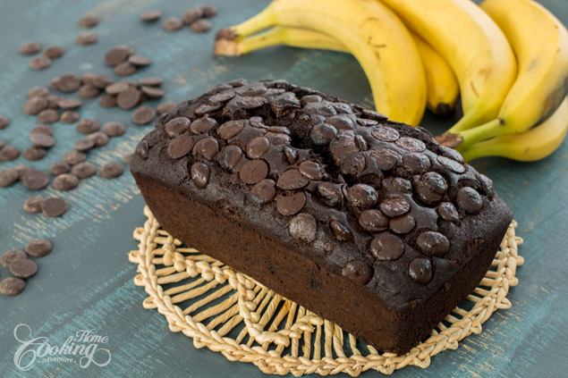

Chocolate Banana Bread

If you usually love banana bread you will definitely love this Chocolate Banana Bread as it is one of the best ways to prepare it. It is moist, chocolaty and full of flavor and makes a great treat alongside morning coffee or milk.
Whenever you make banana bread use ripe bananas to get the best flavor and texture. Use good quality cocoa powder and chocolate for an intense and delicious chocolate flavor.
The recipe is really easy to prepare, and the chocolate bead can be made in advance and frozen for later use. Enjoy!
Prep time=15 mins || Cook time=50 mins || Total time=1 hr 15 mins
Ingredients
1 cup (125g) all-purpose flour
1/2 cup (60g) unsweetened cocoa powder
1 tsp (6g) baking soda
1/2 tsp (2g) baking powder
1/2 tsp (3g) salt
3/4 cup (150g) brown sugar
2 eggs
1/2 cup (113g) butter, room temperature
3 or 4 ripe bananas (about 1 1/4 cup (300g) puree
4 oz (120g) semisweet chocolate chips/chunks
1 tsp (5g) vanilla extract
Garnish
chocolate chips/chunks
Directions
Preheat the oven to 350F (180C). Lightly grease a 9 X 5 inch - 23 X 13 cm loaf pan. Line the bottom and sides with parchment paper. In a medium bowl combine flour, cocoa powder, salt, baking powder and baking soda. In a medium bowl, mash the ripe bananas with a fork. In a large bowl, using an electric hand mixer, cream together the butter and sugar until creamy. Add in the eggs and mix well. Add vanilla extract and mix in the mashed bananas. With mixer on low speed incorporate the flour mixture. Stir in chocolate chips/chunks. Pour the batter into the prepared loaf pan and sprinkle with chocolate chips/chunks on top. Bake for about 50-60 minutes until a toothpick inserted into the center comes out clean. Let bread cool in pan for 10 minutes, and then cool completely onto a cooling rack.
Nutrition facts
1 loaf - Calories:2839 , Fat:142.3g, Saturated Fat:88.4g, Unsaturated Fat:0.0g, Carbohydrates:376.1g, Sugar:209.6g , Fiber:30.8g, Protein:46g, Cholesterol:596mg, Sodium 3333mg, Potassium 3027mg, Vitamin A 123%, Vitamin C 51%, Calcium 45%, Iron 100%, daily percent values are based on a 2,000 calorie diet